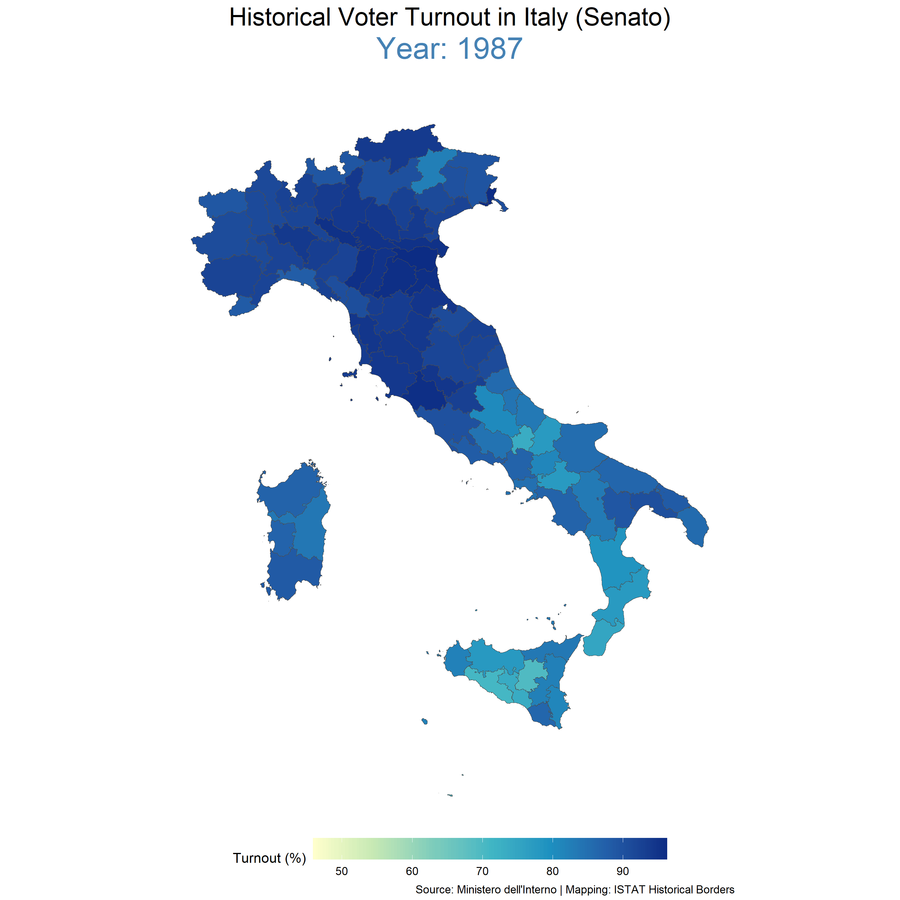
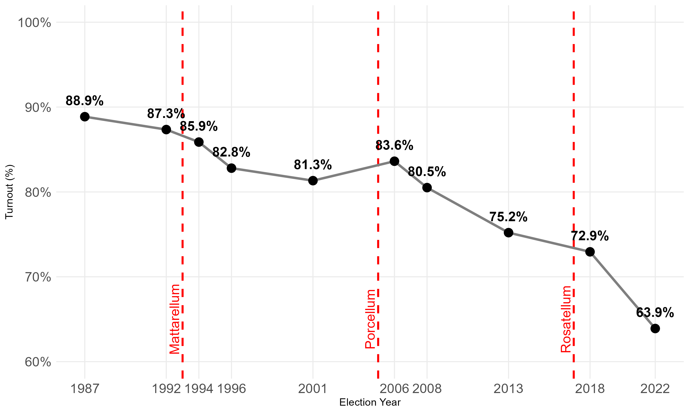
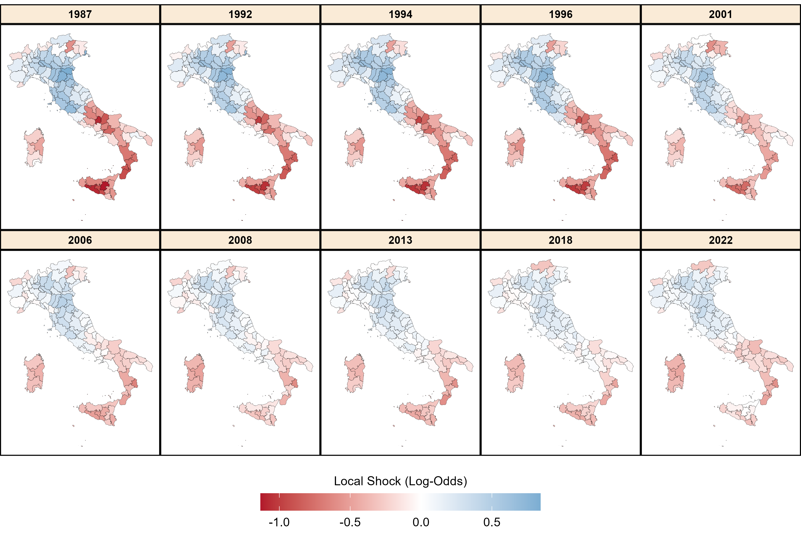
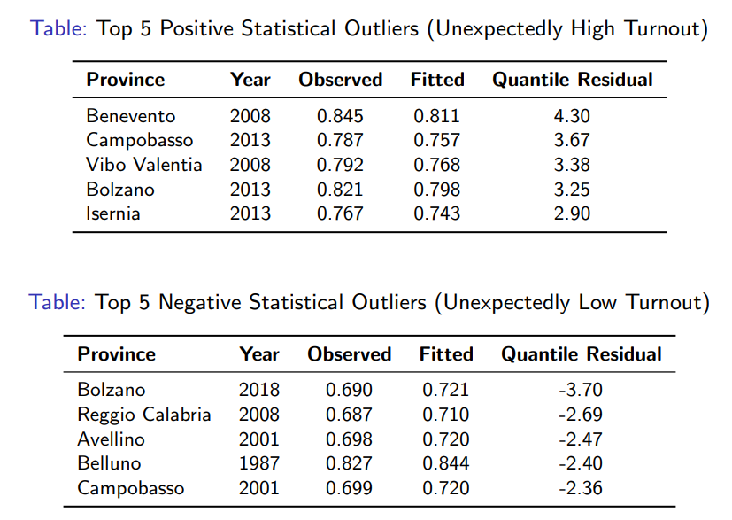

Dinamiche dell’Astensionismo in Italia
Un Modello Spaziotemporale Bayesiano sull’affluenza elettorale
IN SINTESI:
Tra il 1987 e il 2022 l’affluenza alle elezioni politiche italiane ha registrato un calo nazionale del 24%, toccando nel 2022 il minimo storico del 63,9% (circa 17 milioni di astensionisti). In questa tesi magistrale sviluppo un modello gerarchico bayesiano spazio-temporale stimato con R-INLA su una serie storica di 107 province lungo 10 tornate elettorali, combinando i dati del Ministero dell’Interno (Eligendo) con indicatori socio-economici ISTAT.
I risultati chiave:
- Modello ottimale (Knorr-Held Tipo IV): il modello Beta-logit con interazione spazio-temporale strutturata (\(\text{ICAR} \times \text{AR1}\)) raggiunge il miglior adattamento (
WAIC = -6666.74) ed è l’unico a rimuovere simultaneamente l’autocorrelazione spaziale e temporale residua (test Average Moran’s I e Lag-1 Correlation). - Driver socio-economici robusti: il Tasso di occupazione esercita un forte effetto positivo (+11,6% negli odds di voto per ogni deviazione standard), mentre la Densità di popolazione ha un lieve effetto negativo (-3,9%). Indice di vecchiaia e istruzione risultano invece non robusti nel modello completo.
- Omogeneizzazione del disimpegno: la dinamica spazio-temporale mostra il passaggio da shock locali pronunciati nelle prime tornate a una condizione strutturale diffusa sull’intero territorio nazionale.
- Efficienza computazionale: sul modello completo di Tipo IV,
R-INLAconverge in 120 secondi contro quasi 4 ore richieste da un’implementazione MCMC/HMC inbrms.
Strumenti utilizzati: R, R-INLA, brms, tidyverse, sf, spdep, ggplot2, GitHub.
Il fenomeno: crescita del disimpegno politico
L’affluenza elettorale in Italia ha subito un declino strutturale: durante la Prima Repubblica (1948–1992), il sistema proporzionale e la forte polarizzazione bipartitica mantenevano la partecipazione stabilmente tra l’85% e il 90%. La successiva stagnazione istituzionale e il passaggio a sistemi misti e maggioritari (Mattarellum, Porcellum e Rosatellum), più orientati alla governabilità che alla rappresentatività, hanno alimentato una crescente disaffezione, culminata nel 2022 con il minimo storico del 63,9% con circa 17 milioni di astenuti.
Questa ricerca indaga l’evoluzione dell’astensionismo italiano integrando spazio e tempo come componenti strutturali e individuando i driver socio-economici utili a spiegare il fenomeno. L’obiettivo principale della tesi è valutare in che modo le differenze spaziali intrinseche del territorio italiano si siano evolute nel corso del tempo, dimostrando se, una volta isolati esclusivamente gli effetti spazio-temporali, persista ancora una forte distinzione tra Nord e Sud nell’affluenza al voto.
La costruzione del database da fonti ufficiali
La fase preliminare, ha riguardato la costruzione di un database spazio-temporale armonizzato a livello provinciale, riallineando tutte le 107 province italiane ai confini del 2022 lungo le 10 elezioni politiche per la Camera dei Deputati svoltesi tra il 1987 e il 2022.
| Componente | Fonte Ufficiale | Dettaglio e Trattamento |
|---|---|---|
| Affluenza elettorale | Ministero dell’Interno (Eligendo) | Proporzione di votanti per provincia sulle 10 tornate (1987–2022) |
| Covariate socio-economiche | ISTAT & archivio storico 8milacensus | Densità di popolazione, Indice di vecchiaia, Incidenza dell’istruzione, Tasso di occupazione (standardizzate) |
| Geografie e confini | Shapefile storici ISTAT | Armonizzazione ai 107 confini provinciali del 2022 e ricostruzione delle lacune storiche iniziali |
L’analisi esplorativa preliminare (EDA) mette in luce un calo del 24% dell’affluenza nazionale lungo il periodo osservato, confermando una frattura persistente tra un Centro-Nord storicamente più partecipativo e un Mezzogiorno segnato da un disimpegno profondo. Inoltre, l’EDA evidenzia come modelli di regressione semplici incorrerebbero in confondimento temporale, giustificando l’adozione architettura spazio-temporale complesse.


Modello Gerarchico Bayesiano usando INLA
Come variabile dipendente è stata scelta la proporzione provinciale di affluenza \(y_{it} \in (0, 1)\), modellata tramite una distribuzione Beta con funzione di legame logit, così da modellare direttamente i log-odds della partecipazione attesa \(\mu_{it}\). I test preliminari hanno confermato che una Binomiale standard sul conteggio grezzo dei votanti risulta inadeguata, poiché i suoi vincoli rigidi sulla varianza non riescono ad assorbire l’elevata sovradispersione dei dati elettorali aggregati.
Per stimare un’architettura così riccamente parametrizzata è stata utilizzata l’Integrated Nested Laplace Approximation (INLA), un’alternativa deterministica e computazionalmente efficiente ai metodi MCMC sviluppata per i Latent Gaussian Models (LGM). La struttura gerarchica si articola in tre stadi — verosimiglianza dei dati osservati, campo latente modellato come Gaussian Markov Random Field (GMRF) e distribuzioni a priori sugli iperparametri — sfruttando l’approssimazione di Laplace (espansione di Taylor del secondo ordine attorno alla moda), una ricerca su griglia non parametrica e l’approccio Simplified Laplace per ottenere le distribuzioni marginali a posteriori.
Il predittore lineare è formulato come un modello STAR (Structured Additive Regression):
\[ \text{logit}(\mu_{it}) = \beta_0 + \sum_{k=1}^{4} \beta_k X_{itk} + \gamma \, D_t + u_i + v_t + \delta_{it} \]
dove:
- \(\beta_0\) è l’intercetta globale, \(X_{itk}\) sono le quattro covariate socio-economiche standardizzate, mentre \(D_t\) è una variabile dummy per il sistema elettorale in vigore
- \(u_i\) (Struttura spaziale
BYM2): definita su un grafo di contiguità Queen di primo ordine. La specifica BYM2 combina rumore indipendente non strutturato e una componente strutturata ICAR (Intrinsic Conditional Autoregressive) riscalata - \(v_t\) (Struttura temporale
OU): il trend temporale è modellato come processo stocastico continuo di Ornstein-Uhlenbeck (OU), in cui la correlazione decade esponenzialmente con la distanza cronologica esatta tra le elezioni - \(\delta_{it}\) (Interazione spazio-temporale): cattura le traiettorie locali specifiche di ciascuna tornata elettorale
Selezione e diagnostica del modello
Sono state confrontate diverse specifiche spazio-temporali, valutandole mediante WAIC e analisi dei residui.
Il Modello 4, caratterizzato da un’interazione di Knorr-Held di Tipo IV, ha ottenuto il miglior adattamento complessivo (WAIC = -6666.74) ed è risultato l’unico modello capace di eliminare simultaneamente sia l’autocorrelazione spaziale sia quella temporale.
Risultati finali
1. Driver socio-economici robusti
L’analisi di sensitività sulle stime a posteriori del Modello 4 permette di isolare i fattori socio-economici stabili rispetto a quelli dipendenti dalla specificazione del modello:
| Covariata (standardizzata) | Effetto sugli odds di voto | Significatività (CI 95%) |
|---|---|---|
| Tasso di occupazione | +11,4% | Robusto e positivo |
| Densità di popolazione | -3,9% | Robusto e lievemente negativo |
| Indice di vecchiaia | Include lo zero | Non robusto |
| Incidenza dell’istruzione | Include lo zero | Non robusto |
2. Effetti latenti, omogeneizzazione e anomalie territoriali
- Trend nazionale (OU) ed effetto spaziale puro (BYM2): il processo continuo OU mostra elevata volatilità e intervalli di credibilità ampi, segnalando che il solo trend nazionale fatica a spiegare la varianza temporale. Poiché l’interazione spazio-temporale assorbe gran parte delle variazioni locali nel tempo, l’effetto spaziale BYM2 isola le differenze geografiche permanenti: restano evidenti il divario strutturale Nord-Sud e marcate deviazioni negative nelle realtà autonome di Trento, Bolzano e Aosta.
- Omogeneizzazione del disimpegno (Knorr-Held Tipo IV): mappando l’interazione spazio-temporale lungo i 35 anni del panel si osserva una progressiva attenuazione degli shock localizzati verso deviazioni prossime allo zero nelle tornate più recenti, segno che l’astensionismo si è trasformato in una condizione strutturale diffusa a livello nazionale.
- Anomalie dai residui PIT: la provincia autonoma di Bolzano emerge come outlier altamente volatile (riflesso della propria specificità etno-linguistica rispetto ai trend nazionali), mentre scostamenti estremi in province meridionali quali Benevento, Campobasso e Reggio Calabria segnalano mobilitazioni o defezioni improvvise fuori dalle attese strutturali.


3. Benchmark computazionale (INLA vs MCMC)
Sul piano computazionale, il confronto sullo stesso modello complesso di Tipo IV con un’implementazione MCMC (Hamiltonian Monte Carlo tramite brms) conferma il vantaggio pratico di INLA su dataset spazio-temporali estesi:
| Metodo di Stima | Algoritmo | Tempo di Esecuzione |
|---|---|---|
R-INLA |
Approssimazione deterministica di Laplace | 120 secondi (~2 minuti) |
brms |
Hamiltonian Monte Carlo (MCMC) | ~4 ore |
4. Sviluppi futuri
I risultati empirici confermano che l’astensionismo elettorale in Italia è un fenomeno fortemente dipendente dallo spazio e non separabile tra dimensione spaziale e temporale.
Per estendere ulteriormente l’analisi, futuri sviluppi possono affrontare il Modifiable Areal Unit Problem (MAUP) testando scale territoriali differenti (comunale o regionale) e integrare questa architettura bayesiana macro con dati individuali da sondaggio, come i questionari ITANES, per collegare direttamente i trend geografici strutturali alla psicologia del singolo elettore.